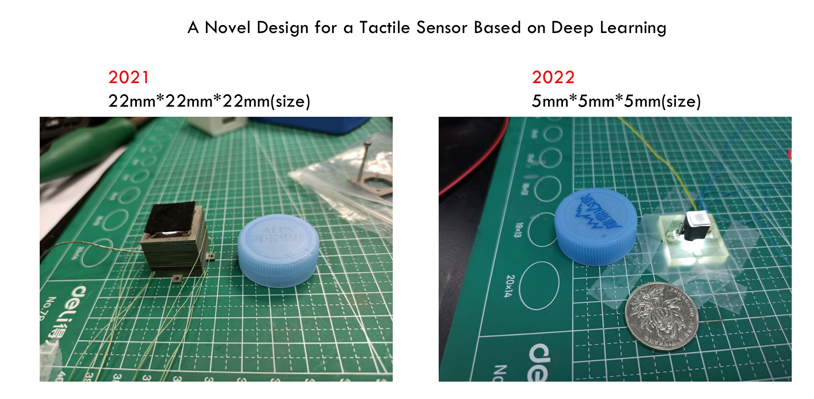

Qingling Duan (段庆玲)
I am currently a third-year M.S. student at SIAT-CAS supervised by Prof. Yongsheng Ou. My research focuses on developing soft sensors for robotic applications. I obtained my Honors B.Eng. degree from the Beijing Institute of Technology in 2020.
News
Recent Projects
The sensing system of the human skin, including the fingers, has a soft three-dimensional force sensing function, which guarantees dexterous grasping in daily human life. However, due to the lack of mechanical sensing and adaptive force control system, the current industrial robots can only perform fixed and repeated operations, significantly limiting their application scenarios. We can also say that a machine without tactile perception ability is brutal to call a "robot", and soft 3D force tactile sensors give the machine the meaning of "human".
This project will realize in-situ real-time multi-dimensional force decoupling under soft conditions through visual-tactile and deep learning technologies so that the robot can sense the normal force Fz and the shear force Fx and Fy and provide the robot with more detailed tactile information such as force position and vibration frequency. At the same time, based on the tactile information provided by the sensor and the robot's control system, the adaptive fusion force control algorithm is developed so that the robot can operate as skillfully as human beings.
Robot gripper using tactile feedback from the proposed sensor to hold a chip/egg without squishing it.